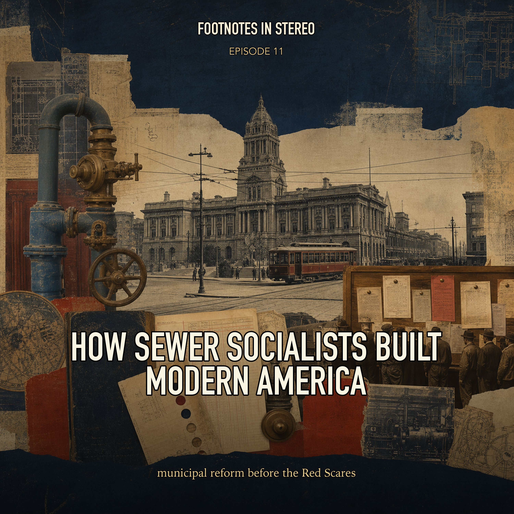

Episode 11 · Patreon bonus
How Sewer Socialists Built Modern America
Before the Red Scares turned socialism into a national political alarm, American socialists were trying to run cities. Mira and Theo follow Milwaukee's sewer socialists, the Socialist Party, Eugene V. Debs, public ownership, sanitation, water, parks, labor, newspapers, and municipal elections to ask what it meant to make radical politics practical. Created with Gemini Notebook. The conversation and voices in this episode were generated with Gemini Notebook.
Sources
- How To Build A Socialist Government: Milwaukee and The Sewer Socialists - DigitalCommons@Macalester College
- The Canton Speech: With Statements to the Jury and the Court - Eugene V. Debs Foundation
- Socialist Party of America Papers: A Resource Guide - ProQuest
- The Reading Labor Advocate and Socialist Power in Pennsylvania - Marxists Internet Archive
Transcript
Machine transcript; lightly formatted and subject to correction.
Transcript processing. Check back shortly.